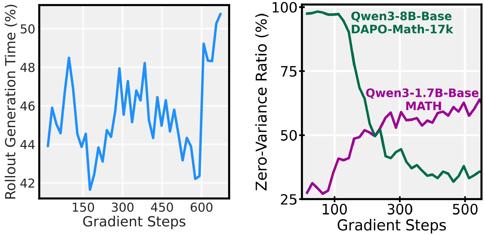
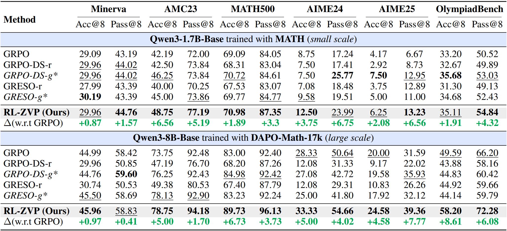
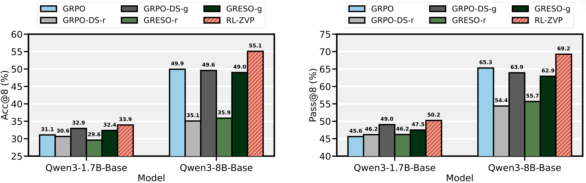
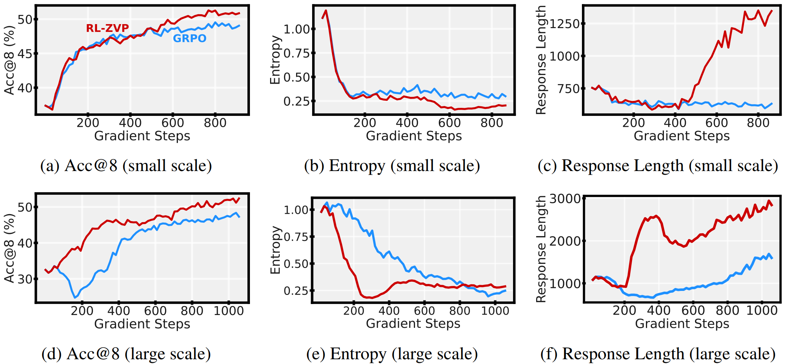
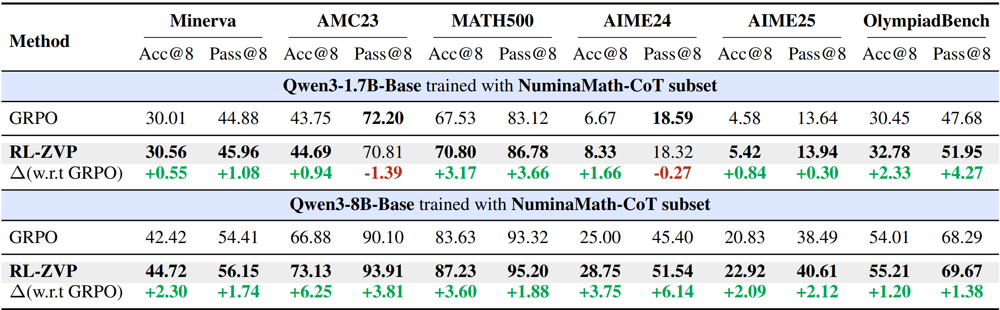
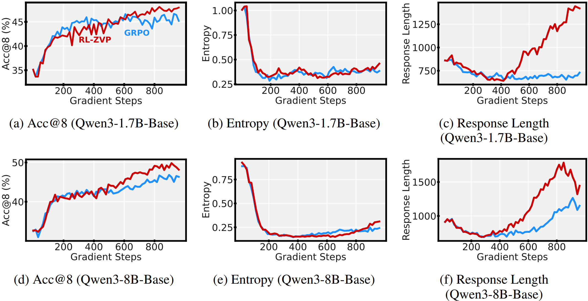

Abstract
Reinforcement Learning with Verifiable Rewards (RLVR) is a powerful framework for improving the reasoning abilities of Large Language Models (LLMs). However, current methods such as GRPO rely only on problems where the model responses to the same input differ in correctness, while ignoring those where all responses receive the same reward - so-called zero-variance prompts. In this work, we argue that such prompts are not useless but can, in fact, provide meaningful feedback for policy optimization. To this end, we introduce RL with Zero-Variance Prompts (RL-ZVP), a novel algorithm that extract learning signals from zero-variance prompts. RL-ZVP directly rewards correctness and penalizes errors even without contrasting responses, modulating feedback with token-level characteristics to preserve informative, nuanced signals. Across six math reasoning benchmarks, RL-ZVP achieves significant improvements of up to 8.61 points in accuracy and 7.77 points in pass rate over GRPO, while consistently outperforming other baselines that filter out zero-variance prompts. Our results highlight the untapped potential of learning from zero-variance prompts in RLVR. To our best knowledge, this is the first work to demonstrate that zero-variance prompts can be exploited rather than discarded. We believe this perspective opens a new direction for RL training, with possibilities for even larger gains through refined formulations in future work.

Left: Rollout generation overhead as a percentage of total training step time. Right: The percentage of zero-variance prompts. Post-rollout filtering still incurs massive overhead on the policy training, while pre-rollout filtering ignores potential learning signals from zero-variance prompts.
Main Results
RL-ZVP shows significant effectiveness on six math reasoning benchmarks:
- Achieving improvements of up to 8.61 points in accuracy and 7.77 points in pass rate over GRPO.
- Consistently outperforming prompt-filtering baselines, even under disadvantageous settings.
- Demonstrating a more stable and consistent learning process.
- Encouraging longer and more confident reasoning across model scale.
- Facilitating more sophisticated reasoning even with small policy models (see the qualitative examples in the paper).

Detailed evaluation results on six math reasoning benchmarks. The best and second best performance across all settings are bold and underscored, respectively. Under a fair setup of equal rollout budget, RL-ZVP achieves the best performance across all datasets, heavily outperforming GRPO. (*) Even in the unfavorable setting where Dynamic Sampling baselines use 3 to 5 times more rollouts, RL-ZVP still outperforms them on the majority of benchmarks.

Average accuracy (a) and pass rate (b) on six math reasoning benchmarks across model scale and training methods. RL-ZVP consistently delivers the strongest performance among all baselines.

Validation accuracy and training dynamics at different experiment scales. Each row shows Acc@8, entropy, and response length during training for Qwen3-1.7B-Base (top) and Qwen3-8B-Base (bottom). RL-ZVP exhibits more consistent and stable trends than GRPO.
Additional Results
We further validate the effectiveness of RL-ZVP on an alternative training dataset. Results show that RL-ZVP is effective not only across evaluation benchmarks but also across different training datasets, emphasizing its robustness and generalization.

Additional evaluation results on six math reasoning benchmarks when the model is trained with NuminaMath-CoT.

Validation accuracy and training dynamics at different experiment scales.
Citation
@misc{le2025promptleftbehindexploiting,
title={No Prompt Left Behind: Exploiting Zero-Variance Prompts in LLM Reinforcement Learning via Entropy-Guided Advantage Shaping},
author={Thanh-Long V. Le and Myeongho Jeon and Kim Vu and Viet Lai and Eunho Yang},
year={2025},
eprint={2509.21880},
archivePrefix={arXiv},
primaryClass={cs.CL},
url={https://arxiv.org/abs/2509.21880},
}